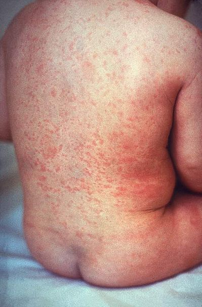

Rodehond ook wel bekend als 'Rubella' komt vooral voor als een onschuldige kinderziekte. De eerste kenmerken komen na 14 tot 21 dagen na de besmetting. door opgezette lymfeknopen achter de oren, en daarna huiduitslag met rode vlekjes. Deze huiduitslag begint op het gezicht en in de hals. Daarna verspreidt het zicht naar de romp en ledematen. Daarnaast komen koorts, oogbindvliesontsteking en gewrichtsklachten opdagen. Over het algemeen worden de geïnfecteerde mensen bijna niet ziek en is de ziekte snel over.
In Nederland wordt iedereen door de overheid ingeënt. Als je tijdens de zwangerschap besmet raakt kan het leiden tot de volgende ernstige aangeboren afwijkingen:
- Oogafwijkingen zoals grijze staar en glaucoom, die resulteren in verminderd gezichtsvermogen of blindheid;
- Verlies van het gehoor (doofheid) als gevolg van beschadiging van de gehoorzenuw;
- Hartafwijkingen (open ductus arteriosus en vernauwing van de longslagader).